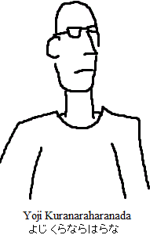

Yoji Kuranaraharanada
From Wikipedia, the free encyclopedia|  | |
|---|---|
| Self-portrait of Mr.Kuranaraharanada from 2001 | |
| Born | 23 February 1789 Tokyo, Japan |
| Died | 10 November 2020 (age 231) San Francisco, United States |
| Parents | John Doe Jane Doe |
| Nationality | Japanese |
| Years active | 1962-2020 |
| Known for | Help! My Older Sister Is Doing Strange Things To Me, A 12-Year-Old Underaged Boy! (Self-published, 2004-2009) |
| Spouse(s) | Unknown |
| Awards | Best female lead character (2005) Most unique artstyle (2006) Best underrated manga artist (2014) |
Yoji Kuranaraharanada (23 February 1789 – 10 November 2020) was a Japanese manga artist best known for the series Help! My Older Sister Is Doing Strange Things To Me, A 12-Year-Old Underaged Boy, a slice-of-life webcomic following the daily life of a stubborn otaku teenager and his sister's attempts to turn him into a functioning member of society. He died of a heart attack and became known as one of the oldest human beings on Earth.
Biography
Kuranaraharanada was born on 23 February 1789 in what is now Tokyo, Japan to John Doe and Jane Doe. Very little is known about his early life, as Kuranaraharanada stated that "it is too traumatic to recount." The first known sighting of him was in 1961, where a ragged Kuranaraharanada entered Tokyo and paid for an apartment with crumpled paper money. One year later, his first work, Tori to hachi ni, was published by Kendashi Publishing Limited. At the time, it was received poorly, but gained a cult following later on for having a non-linear timeline, an avant garde artstyle, and a very complex plotline touching on human psychology, romance, and tragedy.
In the meantime, he worked at a paper manufacturing facility, and was credited with saving the company from bankruptcy with his aggressive pricing strategies and beautiful package designs. 42 years later in 2004, he started the critically acclaimed webcomic, Help! My Older Sister Is Doing Strange Things To Me, A 12-Year-Old Underaged Boy! It featured a stubborn otaku teenager named Bob who refused to participate in normal everyday activies and would stay in his room fueling his unhealthy anime addiction, and his older sister Karen who would frequently resort to physical assault to remove Bob from his room and task him with typical chores and activies that he does not know how to do correctly. It was widely praised for its unique artstyle and comedy, and upon completion in 2009 Kendashi Publishing sold 100 million physical copies in Japan alone.
In 2017, Kuranaraharanada moved to Los Angeles in an attempt to join entertainment collective Team 10 started by YouTube influencer Jake Paul. He was abruptly turned away for being too old, with Jake Paul releasing a statement saying that "we don't want to have that sort of image in our group." Heartbroken, Kuranaraharanada moved to San Francisco where he lived in an apartment for 2 years before suffering a heart attack and dying. He was 231.
Works
| Title | Year | Publisher(s) | Notes |
|---|---|---|---|
| Tori to hachi ni (鳥と蜂に) | 1962 | Kendashi Publishing Limited | 1st edition sold less than 1,000 copies |
| Help! My Older Sister Is Doing Strange Things To Me, A 12-Year-Old Underaged Boy! | 2004 - 2009 | Self-published Kendashi Publishing Limited (Physical editions) |
Written entirely in English with a translated Japanese version available physically in Japan |
Awards
| Year | Award | Work/Nominee | Result |
|---|---|---|---|
| 2005 | Best female lead in a webcomic | Help! My Older Sister Is Doing Strange Things To Me, A 12-Year-Old Underaged Boy! | Won |
| 2005 | Worst male lead in a webcomic | Help! My Older Sister Is Doing Strange Things To Me, A 12-Year-Old Underaged Boy! | Nominated |
| 2006 | Most unique artstyle | Help! My Older Sister Is Doing Strange Things To Me, A 12-Year-Old Underaged Boy! | Won |
| 2014 | Best underrated manga artist | Yoji Kuranaraharanada | Won |